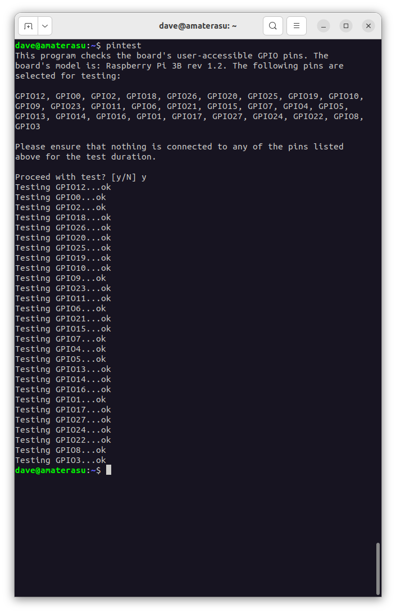

8.2. pintest
A utility for testing the GPIO pins on a Raspberry Pi, inspired by pigpio’s gpiotest example script, and wiringPi’s pintest utility.
New in version 2.0: The pintest utility.

8.2.1. Synopsis
pintest [-h] [--version] [-p PINS] [-s SKIP] [-y] [-r REVISION]
8.2.2. Description
A utility for testing the function of GPIOs on a Raspberry Pi. It is possible to damage the GPIOs on a Pi by passing too much current (or voltage in the case of inputs) through them. The pintest utility can be used to determine if any of the GPIOs on a Pi are broken.
The utility will test all physically exposed GPIOs (those on the main GPIO
header) by default, but you may wish to only test a subset, or to exclude
certain GPIOs which can be accomplished with the pintest --pins or
pintest --skip options.
Note
You must ensure that nothing is connected to the GPIOs that you intend to test. By default, the utility will prompt you before proceeding, repeating this warning.
In the event that any GPIO is found to be faulty, it will be reported in the output and the utility will exit with a return code of 1. If all specified GPIOs test fine, the return code is zero.
8.2.3. Options
- -h, --help
show this help message and exit
- --version
Show the program’s version number and exit
- -p PINS, --pins PINS
The pin(s) to test. Can be specified as a comma-separated list of pins. Pin numbers can be given in any form accepted by gpiozero, e.g. 14, GPIO14, BOARD8. The default is to test all pins
- -s SKIP, --skip SKIP
The pin(s) to skip testing. Can be specified as comma-separated list of pins. Pin numbers can be given in any form accepted by gpiozero, e.g. 14, GPIO14, BOARD8. The default is to skip no pins
- -y, --yes
Proceed without prompting
- -r REVISION, --revision REVISION
Force board revision. Default is to autodetect revision of current device. You should avoid this option unless you are very sure the detection is incorrect
8.2.4. Examples
Test all physically exposed GPIOs on the board:
$ pintest
Test just the I2C GPIOs without prompting:
$ pintest --pins 2,3 --yes
Exclude the SPI GPIOs from testing:
$ pintest --exclude GPIO7,GPIO8,GPIO9,GPIO10,GPIO11
Note that pin numbers can be given in any form accepted by GPIO Zero, e.g. 14, GPIO14, or BOARD8.